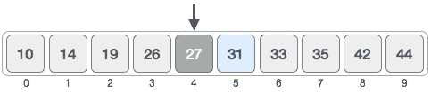

How binary search works?
The following is our sorted array and let us assume that we need to search the location of value 31 using binary search.
First, we shall determine half of the array by using this formula −
mid = low + high / 2
Here it is, 0 + 9 / 2 = 4 (integer value of 4.5). So, 4 is the mid of the array.

Now we compare the value stored at location 4, with the value being searched, i.e. 31. We find that the value at location 4 is 27, which is not a match. As the value is greater than 27 and we have a sorted array, so we also know that the target value must be in the upper portion of the array.

We change our low to mid + 1 and find the new mid value again.
low = mid + 1
mid = low + high / 2
Our new mid is 7 now. We compare the value stored at location 7 with our target value 31.

The value stored at location 7 is not a match, rather it is more than what we are looking for. So, the value must be in the lower part from this location.

Hence, we calculate the mid again. This time it is 5.
We compare the value stored at location 5 with our target value. We find that it is a match.
We conclude that the target value 31 is stored at location 5.
Algorithm
Binary Search ( Array A, Value x)
Step 1: Set low = 1 & Set high = n
Step 2: while x is not found repeat steps 3,4,5&6
Step 3: set mid = low + high / 2
Step 4: if A[mid] < x
set low = mid + 1
Step 5: if A[mid] > x
set high = mid - 1
Step 6: if A[mid] = x
print x found at location mid
Step 7: Exit
Algorithm Analysis
Worst case analysis
In the worst case, the item X does not exist in the array A at all. Through each recursion or iteration of Binary Search, the size of the admissible range is halved. This halving can be done ceiling(lg n ) times. Thus, ceiling(lg n ) comparisons are required. i.e. O(log n) comparsions.
Average Case Analysis
To find the average case, take the sum over all elements of the product of number of comparsions required to find each element and the probability of searching for that element. To simplify the analysis, assume that no item which is not in A will be searched for, and that the probabilities of searching for each element are uniform.
The difference between O(log(N)) and O(N) is extremely significant when N is large: for any practical problem it is crucial that we avoid O(N) searches. For example, suppose your array contains 2 billion (2x10^9) values. Linear search would involve about a billion comparisons; binary search would require only 32 comparisons!
Best Case Analysis(Bogus)
In the best case, the item X is the middle in the array A. A constant number of comparisions (actually just 1) are required. i.e. O(1) comparison.